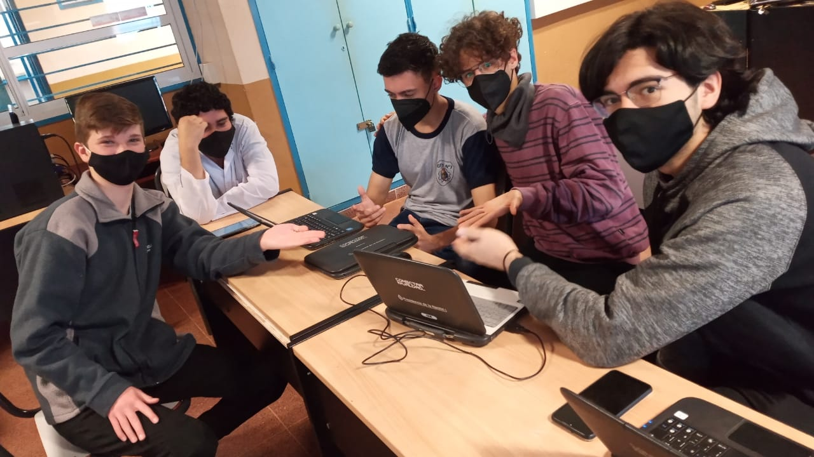

Introducción
Durante el ciclo lectivo 2021, en la asignatura de Práctica Profesionalizante, el profesor Jorge Horeyco propuso que se realizara una maqueta domótica empleando los conocimientos que se aprendieron durante el transcurso del año en las diversas materias del taller de informática de 5to año de la EPET N°7.
Los alumnos formaron grupos de entre 6 y 7 personas para la maquetación, programación y divulgación del proyecto. Fue así que se formó el grupo integrado por los alumnos Baez, Ivan; Benitez, Martin; Kelm, Nahuel; Larroza, Lautaro; Mittelstedt, Gabriel; Morales, Juan P.; Vergara, Joaquin.

Este grupo decidió basar su proyecto en una simulación de la carretera misionera conocida como "Ruta 7", la cual tendría como parte domótica un puente levadizo, una barrera de peaje y un semáforo. A continuación veremos cómo se planteo la realización del proyecto.
Organización
El grupo de alumnos de 5° "B" decidió reliazar una organización de las tareas con el fin de lograr que todos los participantes del proyecto puedan relizar y aportar sus ideas y pensamientos. Así es como se dividieron en cuatro grupos, los cuales son:
- Programación de Arduino: Larroza, Lautaro y Mittelstedt, Gabriel
- Programación de aplicación de celular: Mittelstedt, Gabriel y Larroza, Lautaro
- Programación de página web: Morales, Juan Pablo y Vergara, Joaquín
- Armado y preparación de la maqueta: Baez, Iván; Benitez, Martín y Kelm, Nahuel.
Desarrollo
Lo que se presentará en la maqueta es la simulación de un circuito por el cual pasaría un vehículo utilitario con el fin de recrear una ruta que consta de un peaje, que tiene un semáforo y barrera, dicho peaje da paso a un puente levadizo.
El circuito tiene un sistema de encendido y apagado conectado a un dispositivo móvil por medio de conectividad Bluetooth, el cual es controlado por un usuario. Paralelamente al armado de la maqueta los alumnos crearon una aplicación con la finalidad de controlar los funcionamientos de la maqueta. Cuando el operador se conecta a la plaqueta de Arduino (una de las partes fundamentales del prototipo), en el dispositivo móvil utilizado aparece el estado de conexión entre el dispositivo y la maqueta; en la pantalla además aparece el comando de “inicio” y “detención o apagado” del mecanismo.
El circuito de Arduino del proyecto "Ruta 7" funciona a base de 2 servo motores que simulan una barrera de peaje y un puente levadizo, en conjunto con un semaforo de 3 leds (rojo, amarillo y verde). Estos componentes son conectados al "protoboard" y a la plaqueta "Arduino Uno". Todo este circuito es alimentado por la tensión que proporciona la computadora al ser conectado por cable USB. El circuito tiene un negativo llamado GND y el positivo es de 5V que sale desde la Arduino Uno. Todo esto es posible gracias a que con los cables de conexión Arduino podemos conectar los servo motores y los leds al circuito y a la Arduino Uno.
Para la programación web de la página del proyecto, se utilizó el editor de código fuente "Visual Studio Code" usando el lenguaje de marcado "HTML" y el lenguaje de diseño gráfico "CSS".
El montaje se da de la siguiente manera: sobre el Telgopor se dibuja una ruta en la cual se encuentra el peaje construido con cartón y pintado, como todos los peajes, el de la maqueta cuenta con una barrera hecha de palitos de picolé. El semáforo consta de dos focos leds (uno rojo y otro verde); el puente también está hecho de palitos de picolé y cartón. Los costados están pintados de color verde simulando el borde de la ruta y la naturaleza de Misiones.
Créditos
Se agradece al profesor Horeyco Jorge que nos ayudó durante el proceso de creación de la maqueta, enseñando a los alumnos a poder realizar proyectos como este gracias a los conocimientos básicos de programación de paginas web y programación de objetos con Arduino.
Y a todo el resto del equipo de profesores del area de informática de la E.P.E.T. N°7 se les agradece por sus aportes y apoyo a los alumnos que han realizado esta tarea.